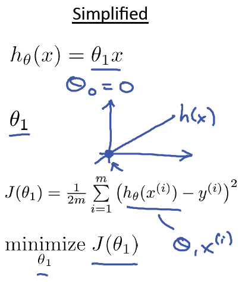

单变量线性回归¶
斯坦福大学机器学习第二课”单变量线性回归(Linear regression with one variable)“ 学习笔记，本次课程主要包括7部分：
- Model representation(模型表示
- Cost function(代价函数，成本函数)
- Cost function intuition I(直观解释1)
- Cost function intuition II(直观解释2)
- Gradient descent(梯度下降)
- Gradient descent intuition(梯度下降直观解释)
- Gradient descent for linear regression(应用于线性回归的的梯度下降算法)
以下是第二课“单变量线性回归”的课件资料下载链接，视频可以在Coursera机器学习课程上观看或下载： PPT PDF
Model representation(模型表示)¶
回到 引言 中的房屋价格预测问题，首先它是一个有监督学习的问题 （对于每个样本的输入，都有正确的输出或者答案），同时它也是一个回归问题 （预测一个实值输出）。训练集表示如下：

其中：
m = 训练样本的数目
x’s = “输入”变量，也称之为特征
y’s = “输出”变量，也称之为“目标”变量
对于房价预测问题，学习过程可用下图表示：

其中x代表房屋的大小，y代表预测的价格，h(hypothesis)将输入变量 x 映射到输出变量 y，如何表示h?
事实上Hypothesis可以表示成如下形式：
简写为 h(x)，也就是带一个变量的线性回归或者单变量线性回归问题。
Cost function(代价函数，成本函数)¶
对于Hypothesis: \(h_\theta(x) = \theta_0 + \theta_1 x\), \(\theta_i\) 为参数, 如何求 \(\theta_i\) ?
构想： 对于训练集(x, y)，选取参数 \(\theta_0, \theta_1\) 使得 \(h_\theta(x)\) 尽可能的接近y。
如何做呢？一种做法就是求训练集的平方误差函数（squared error function），Cost Function可表示为:
并且选取合适的参数使其最小化，数学表示如下：
Cost function intuition I(直观解释1)¶
直观来看，线性回归主要包括如下四大部分，分别是Hypothesis, Parameters, Cost Function, Goal:

这里作者给出了一个简化版的Cost function解释，也就是令 \(\theta_0\) 为0：
然后令 \(\theta_1\) 分别取1、0.5、-0.5等值，同步对比 \(h_\theta(x)\) 和 \(J(\theta_0, \theta_1)\) 在二维坐标系中的变化情况，具体可参考原PPT中的对比图，很直观。
Cost function intuition II(直观解释2)¶
回顾线性回归的四个部分，这一次不再对Cost Function做简化处理，这个时候 \(J(\theta_0, \theta_1)\) 的图形是一个三维图或者一个等高线图，具体可参考原课件。
可以发现，当 \(h_\theta(x)\) 的直线越来越接近样本点时， \(J(\theta_0, \theta_1)\) 在等高线的图中的点越来越接近最小值的位置。
Gradient descent(梯度下降)¶
应用的场景之一——最小值问题：
对于一些函数，例如 \(J(\theta_0, \theta_1)\), 目标: \(\displaystyle\mathop{\mathrm{minimize}}\limits_{\theta_0, \theta_1} J(\theta_0, \theta_1)\)
方法的框架:
- 给 \(\theta_0, \theta_1\) 一个初始值，例如都等于0
- 每次改变 \(\theta_0, \theta_1\) 的时候都保持 \(J(\theta_0, \theta_1)\) 递减， 直到达到一个我们满意的最小值；
对于任一 \(J(\theta_0, \theta_1)\), 初始位置不同，最终达到的极小值点也不同，例如以下两个例子：
梯度下降算法：
重复下面的公式直到收敛：
举例：
参数正确的更新过程如下（同步更新）：

错误的更新过程如下：

Gradient descent intuition(梯度下降直观解释)¶
举例，对于一个简化的 \(J(\theta_1)\) 来说，无论抛物线的左边还是右边， 在梯度下降算法下， \(\theta_1\) 都是保持正确的方向（递增或递减）
对于learning rate(又称为步长)来说:

如果 \(\alpha\) 过小，梯度下降可能很慢；如果过大，梯度下降有可能“迈过”（overshoot）最小点， 并且有可能收敛失败，并且产生“分歧”(diverge)
梯度下降可以使函数收敛到一个局部最小值，特别对于learning rate \(\alpha\) 是固定值的时候：

当函数接近局部最小值的时候，梯度下降法将自动的采取“小步子”， 所以没有必要随着时间的推移减小learning rate.
关于梯度下降算法，可以参考 维基百科 的介绍
Gradient descent for linear regression(应用于线性回归的的梯度下降算法)¶
梯度下降算法：

线性回归模型：

\(J(\theta_0, \theta_1)\) 对 \(\theta_0, \theta_1\) 求导得：

在梯度下降算法中进行替换，就得到单变量线性回归梯度下降算法：

详细的图形举例请参考官方PPT，主要是在等高线图举例梯度下降的收敛过程， 逐步逼近最小值点，其中一幅图说明：线性回归函数是凸函数(convex function)，具有碗状（bowl shape)。
总结： 这里的梯度下降算法也称为”Batch” 梯度下降: 梯度下降的每一步都使用了所有的训练样本。